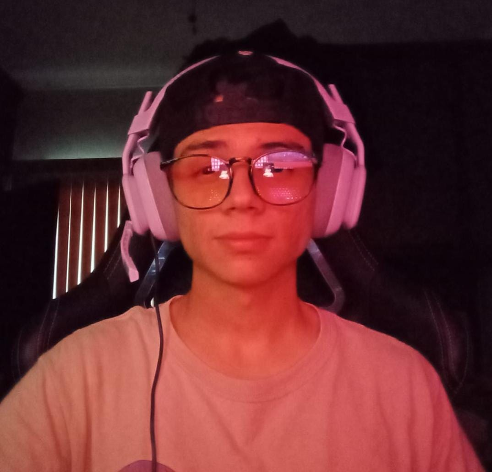

Y esta es una pagina web personal, con la finalidad de presentarme a traves de este medio.
Soy estudiande de Ingenieria en Software en ITSON, actualmente estoy cursando mi sexto semestre de la carrera.
Me considero una persona creativa y apasionada con lo que me gusta, tambien soy muy curioso y me gusta investigar e informarme
acerca de temas que me interesan o me parecen importantes.